Kiểm toán dòng tiền POS
Nhận diện sai lệch tài chính và hành vi khách hàng bằng phương pháp Học máy không giám sát.
Phát biểu Bài toán
Trong vận hành thực tế của hệ thống POS, nhân viên nhập tay số tiền kiểm đếm cuối ca — tạo ra khoảng trống kiểm soát giữa doanh thu máy tính và tiền mặt vật lý. Bài toán đặt ra là: làm thế nào để tự động phân loại, giải thích và cảnh báo các sai lệch này mà không cần nhãn giám sát (vì thực tế không ai đánh nhãn "ca này bị gian lận")?
VẤN ĐỀ 01
Sai lệch két không giải thích được
236 ca làm việc có Cash_Diff ≠ 0 nhưng không có thông tin nào chỉ ra nguyên nhân: nhầm loại tiền, thối sai, hay lười chốt? Quản lý hiện phải dò tay từng ca.
VẤN ĐỀ 02
Dữ liệu phi cấu trúc bị bỏ phí
Cột notes chứa 101 ghi chú tên khách hàng viết tắt kiểu chat ("n9oc pt", "c hải"...). Không có hệ thống nào khai thác cột này để phát hiện bất thường thanh toán theo hành vi khách.
VẤN ĐỀ 03
Thiếu cơ chế cảnh báo tự động
Hệ thống POS hiện chỉ lưu số liệu thô, không có tầng phân tích. Mỗi cuối tháng, chủ cửa hàng mới phát hiện lệch tiền — quá muộn để truy vết.
VẤN ĐỀ 04
Không có nhãn giám sát
Đây là ràng buộc cốt lõi: không tồn tại tập dữ liệu nào được đánh nhãn "gian lận / không gian lận". Mọi thuật toán phải hoạt động theo chế độ Unsupervised Learning.
Câu hỏi Nghiên cứu (Research Questions)
Động lực & Đặc điểm Dữ liệu
Dự án xuất phát từ nhu cầu thực tế của hệ thống POS Apps Script do nhóm tự phát triển và thương mại hóa. Dataset là dữ liệu sản xuất thật — không phải dữ liệu mô phỏng — với cấu trúc đặc thù không tồn tại trên các kho dữ liệu công khai.
actual_cash (thủ quỹ tự đếm)notes phi cấu trúcDataset Kaggle thường có nhãn → dùng Supervised Learning. Dataset của nhóm không có nhãn + có cấu trúc 2 bảng phức tạp → phải thiết kế pipeline Unsupervised hoàn toàn khác.
| Đặc điểm | Nghiên cứu POS phổ biến | Dataset Kaggle retail | Dự án này ✦ |
|---|---|---|---|
| Dữ liệu tiền mặt vật lý | – Không có | – Không có | ✓ actual_cash |
| Ghi chú phi cấu trúc (tiếng Việt) | – Không có | – Không có | ✓ Cột notes viết tắt |
| Unsupervised hoàn toàn (không nhãn) | △ Một phần | – Phần lớn có nhãn | ✓ Hoàn toàn |
| Kết hợp 3 thuật toán clustering | – Thường 1 thuật toán | – Không áp dụng | ✓ K-Means + DBSCAN + Ward |
| Anomaly detection theo hành vi khách | △ Hiếm | – Không có | ✓ IQR per-customer |
| Rule engine + báo cáo ngôn ngữ tự nhiên | – Không có | – Không có | ✓ Không dùng LLM |
Các Nghiên cứu Liên quan
Nhóm định vị dự án trong bối cảnh 3 hướng nghiên cứu chính: phát hiện gian lận tài chính, phân tích hành vi POS, và khai thác văn bản phi cấu trúc. Mỗi hướng có khoảng trống mà dự án này lấp đầy.
Kiến trúc Pipeline Toàn hệ thống
Dữ liệu chảy qua 4 vòng xử lý tuyến tính, mỗi vòng output một artifact cụ thể làm đầu vào cho vòng tiếp theo. Vòng 3 là nhánh độc lập song song với Vòng 2.
ĐẦU VÀO
Raw Data
—
242 bản ghi
DetailsTransaction.csv
5.412 giao dịch
VÒNG 1
Descriptive
Data Understanding
+ Data Preparation
merge_asof forward
Feature Engineering
EDA (KDE, Scatter,
Heatmap, TimeSeries)
VÒNG 2
Diagnostic
Modeling
+ Evaluation
RobustScaler
K-Means (k=4)
DBSCAN · Agglomerative
PCA · 4 Metrics
VÒNG 3
Customer Pattern
Data Prep + Modeling
(nhánh độc lập)
Fuzzy Grouping
Vietnamese Normalize
IQR Anomaly
Payment Pattern
VÒNG 4
Prescriptive
Evaluation
+ Deployment
Rule Engine (R1–R3)
Severity Scoring
Auto Report Generator
(không dùng LLM)
ĐẦU RA
Báo cáo Cuối
—
236 ca đã phân loại
Khuyến nghị tự động
bằng tiếng Việt
Audit_Merged_Data.csv (236 ca đã làm sạch)
Clustered_Shifts.csv (thêm cột cluster C0–C3)
Customer_Pattern.csv (101 ghi chú đã chuẩn hóa)
Rule_Engine_Report.csv (báo cáo kiểm toán hoàn chỉnh)
Quy trình CRISP-DM Pipeline
CRISP-DM là chuẩn công nghiệp hiện đại của KDD Process — cùng triết lý khám phá tri thức từ dữ liệu (Knowledge Discovery in Databases), được tổ chức thành 6 bước lặp có thể quay lại bất kỳ giai đoạn nào.
Đội ngũ thực hiện
Nhóm sinh viên Khoa Công nghệ Thông tin — Trường Đại học Sư phạm TP.HCM

Võ Văn Minh
MSSV: 50.01.104.090
Data Analyst
Thực hiện Vòng 3 (Khai phá hành vi khách hàng qua Text Mining) và Vòng 4 (Xây dựng logic tự động cho Hệ thống Luật - Rule Engine).

Trần Hoàng Đạt
MSSV: 49.01.104.030 • Trưởng nhóm
Lead Data Scientist
Thiết kế luồng Dữ liệu (Pipeline), thực hiện Vòng 1 (EDA) và xây dựng mô hình Học máy K-Means ở Vòng 2 để phân cụm rủi ro.

Nguyễn Trần Bảo Thái
MSSV: 49.01.104.133
Frontend / Web Developer
Lập trình toàn bộ giao diện Web App báo cáo trực quan (HTML/CSS/JS) và đóng gói triển khai hệ thống (Docker Deployment).
Phân tích Mô tả (Descriptive Analysis)
Khám phá và làm sạch dữ liệu từ Nhật ký chính (MainLog) và Chi tiết giao dịch (DetailsTransaction). Áp dụng kỹ thuật nối dữ liệu theo khung thời gian (Window-based merge) bằng hàm merge_asof(direction='forward'), xây dựng thành công 6 đặc trưng kiểm toán hoàn chỉnh. Input: MaiLog.csv, DetailsTransaction.csv.
1. Phân phối Lệch Két & Đối soát Hóa đơn
Đọc biểu đồ: Hai histogram đặt cạnh nhau. Mỗi cột = số ca rơi vào khoảng tiền đó. Đường cong đỏ = ước lượng mật độ (KDE) làm mượt phân phối.
- Hình trái (Cash_Diff): Toàn bộ đống cột nằm về phía phải mốc 0 (đường đen đứt). Trung bình = 771.148đ (đường cam đứt). Đây là mức két dư điển hình mỗi ca — chủ yếu do tiền từ ca trước chưa được nộp lên, dồn lại.
- Hình phải (Payment_Mismatch): Chỉ có một cột duy nhất dựng đứng tại x = 0, đếm hơn 200 ca. Không có cột nào ở bất kỳ vị trí nào khác.
- Phát hiện cốt lõi:
Payment_Mismatch= 0 trên toàn bộ 236 ca — xác nhận không tồn tại lỗi bấm nhầm loại tiền (Tiền mặt / Chuyển khoản) trong suốt kỳ dữ liệu.
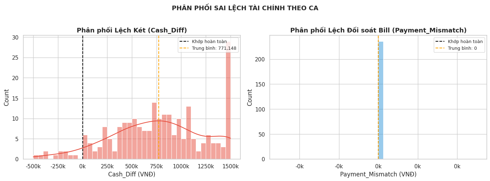
2. Phân loại Ca làm việc theo Chiều lệch
Đọc biểu đồ: Mỗi chấm = 1 ca làm việc. Trục X = Payment_Mismatch, Trục Y = Cash_Diff. Xanh lá = Ca Sáng, Cam = Ca Chiều.
- Điều bất thường nhất: Tất cả 236 chấm nằm trên một đường thẳng đứng duy nhất tại x = 0. Không có chấm nào lệch sang trái hay phải — vì Payment_Mismatch = 0 với toàn bộ ca, không có ca nào bấm nhầm loại tiền.
- Ca Chiều (cam) leo lên cao hơn nhiều trên trục Y, có chấm vọt đến 2.000k–2.200k — két dư cực đoan.
- Ca Sáng (xanh) phần lớn nằm vùng 0–1.000k; có một chấm xanh tít dưới cùng (~−600k) là ca hụt tiền nặng nhất.
- Manh mối cho Vòng 2: Sự phân cực Ca Sáng / Ca Chiều theo Cash_Diff là cơ sở toán học để K-Means nhận ra các cụm hành vi khác nhau.
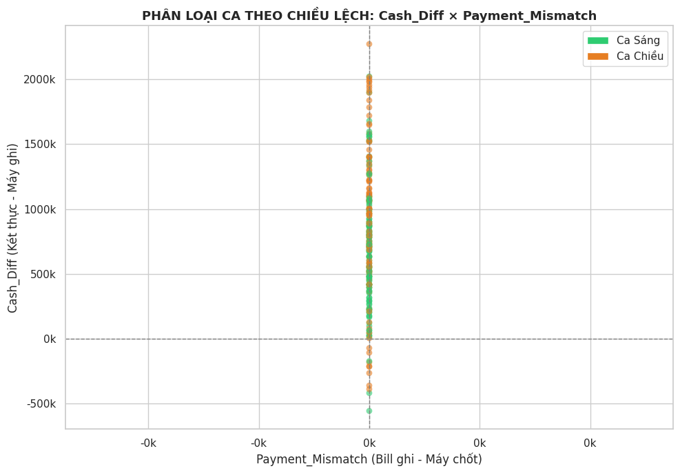
3. So sánh Ca Sáng và Ca Chiều (Boxplot)
Đọc biểu đồ: Ba boxplot đặt cạnh nhau. Hộp = vùng 25%–75% số ca. Đường giữa hộp = trung vị. Râu = giá trị xa nhất hợp lệ. Đường đỏ đứt = mốc 0.
- Hộp 1 — Cash_Diff: Hộp Ca Chiều (cam) cao hơn và to hơn hộp Ca Sáng (xanh) — Ca Chiều dư két nhiều hơn và bất ổn hơn một cách có hệ thống.
- Hộp 2 — Payment_Mismatch: Cả hai ca chỉ là một đường kẻ ngang đè lên mốc 0 — không có hộp, không có râu. Lần thứ ba xác nhận Payment_Mismatch = 0 tuyệt đối.
- Hộp 3 — Doanh thu: Ca Sáng (xanh) có doanh thu cao hơn Ca Chiều rõ rệt (trung vị ~850k vs ~650k) — Ca Sáng đông khách hơn, nhân viên bận hơn, dễ xảy ra sai sót hơn.
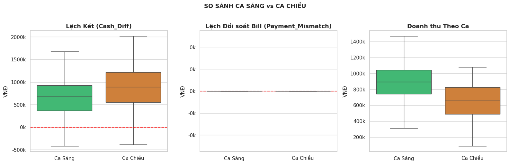
4. Phân tích Tương quan (Correlation Heatmap)
Đọc biểu đồ: Bảng màu — đỏ đậm = tương quan dương mạnh (r gần 1), xanh đậm = tương quan âm mạnh (r gần −1), trắng = không liên quan. Số trong ô = hệ số Pearson r.
actual_cash_in_drawer↔Cash_Diff= 0.91 (đỏ đậm nhất): Két chứa càng nhiều tiền thực tế thì lệch két càng lớn — hợp lý, vì tiền tích lũy từ nhiều ca.total_revenue↔bill_count= 0.90: Doanh thu cao đi kèm nhiều hóa đơn — hiển nhiên, không có gì lạ.Payment_MismatchvàRevenue_Mismatch: toàn bộ hàng và cột trống tinh — không có số nào. Đây không phải lỗi vẽ hình. Hai biến này = 0 tuyệt đối nên không có phương sai, không thể tính tương quan Pearson.Cash_Diff↔total_revenue= −0.27 (xanh nhạt): Ca doanh thu cao thì lệch két thấp hơn một chút — gợi ý Ca Sáng đông khách nhưng chốt sổ kỹ hơn.
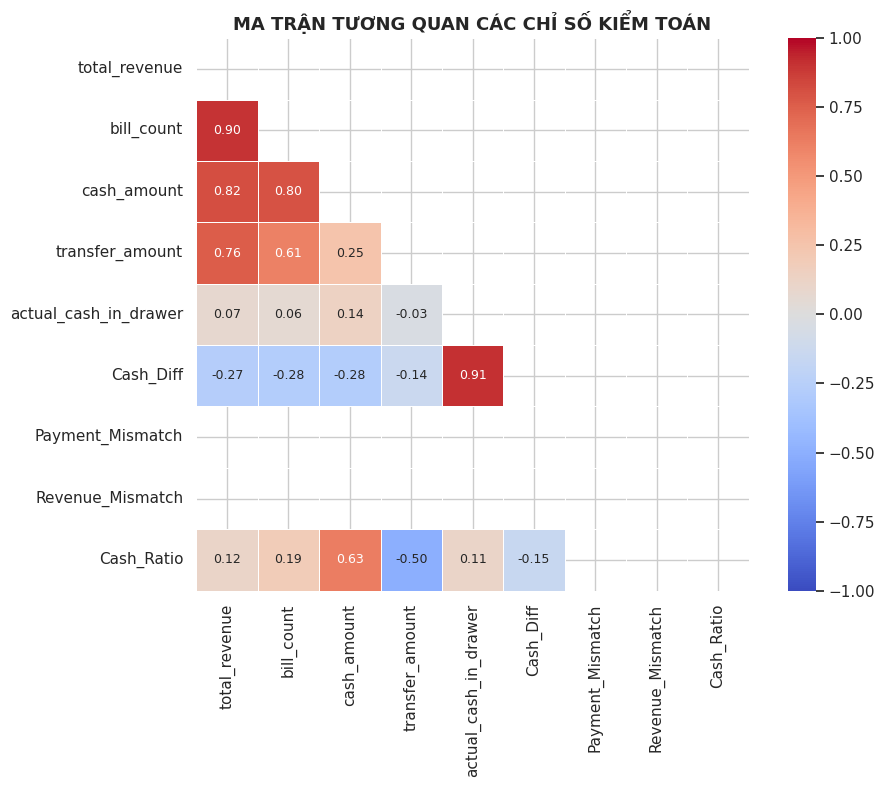
5. Đối soát Tổng tiền & Xu hướng Tỷ lệ Tiền mặt
Đọc biểu đồ: Hai hình hoàn toàn khác nhau đặt cạnh nhau.
- Hình trái — 4 cột tổng tiền: Tiền mặt theo máy chốt = 100,5M; Tiền mặt theo bill chi tiết = 100,5M. Chuyển khoản theo máy = 90,9M; theo bill = 90,9M. Hai cặp cột bằng nhau tuyệt đối đến từng đồng — xác nhận lần thứ tư: không có ca nào bấm nhầm loại tiền trong 5 tháng vận hành.
- Hình phải — Xu hướng Cash_Ratio theo thời gian: Đường đỏ (rolling 7 ca) dao động trong vùng 40%–80%, không có xu hướng tăng hay giảm rõ ràng theo thời gian. Có một đỉnh nhọn ~85% vào tháng 1/2026 rồi trở về vùng bình thường.
- Kết luận: Tỷ lệ tiền mặt không có tính mùa vụ — rủi ro không bắt nguồn từ biến động thời gian mà đến từ thói quen vận hành cố hữu của từng ca.
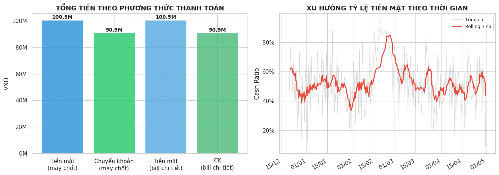
💡 TỔNG KẾT VÒNG 1 & CHUẨN BỊ ĐẦU VÀO
Ghép DetailsTransaction → từng ca trong MainLog bằng merge_asof(forward). 242 → 236 ca hợp lệ (loại 6 ca doanh thu = 0).
6 đặc trưng kiểm toán: Cash_Diff, Payment_Mismatch, Revenue_Mismatch, Cash_Ratio, CashDiff_Ratio, Shift_Velocity.
Payment_Mismatch = 0 tuyệt đối (xác nhận 4 lần qua 4 hình khác nhau). Cash_Diff trung bình +771k — két thường dư, không hụt. Không có tính mùa vụ.
Audit_Merged_Data.csv — 236 ca đã làm sạch, "Single Source of Truth" cho toàn pipeline.
Chẩn đoán Rủi ro (Diagnostic — K-Means, DBSCAN & Agglomerative)
Sử dụng kết hợp 3 thuật toán học máy không giám sát để phân cụm các ca làm việc. K-Means đóng vai trò chủ đạo nhờ khả năng tối ưu tâm cụm, trong khi DBSCAN và Agglomerative Ward được dùng để kiểm chứng cấu trúc và cô lập nhiễu (outliers). Toàn bộ dữ liệu được chuẩn hóa bằng RobustScaler để chống nhiễu từ các ca lệch tiền khổng lồ. Input: Audit_Merged_Data.csv, Clustered_Shifts.csv.
1. Đánh giá Metrics và Chọn k=4 tối ưu
Vấn đề: K-Means yêu cầu xác định trước số cụm (k). Nhóm sử dụng nhiều chỉ số đánh giá nội bộ nhằm lựa chọn số cụm phù hợp và cân bằng giữa chất lượng hình học và ý nghĩa nghiệp vụ.
- Elbow Curve: Inertia giảm mạnh từ k=2 đến k=4 (từ 940 xuống 524.6), sau đó tốc độ giảm chậm lại rõ rệt. Đây là dấu hiệu k=4 là điểm cân bằng tốt giữa số cụm và chất lượng gom nhóm.
- Silhouette Score: Tại k=4 = 0.271. Cần lưu ý trung thực: k=2 cho Silhouette cao nhất (0.820) và k=5 (0.293) cũng cao hơn k=4. Tuy nhiên k=2 quá thô — chỉ tách "bình thường" vs "bất thường", không phân biệt được các loại hành vi vận hành khác nhau. k=4 được chọn vì Elbow rõ ràng và 4 cụm có ý nghĩa kinh doanh.
- Davies-Bouldin Index ↓ (thấp hơn = tốt hơn): Tại k=4 = 1.004 — đây là điểm cao nhất (tệ nhất) trong dải k=2..7. Nguyên nhân: ranh giới giữa C1 (Bình Thường) và C3 (Tải Cao) không tách biệt hoàn toàn về mặt hình học — phản ánh đúng thực tế dữ liệu vận hành có nhiều ca giao thoa.
- Calinski-Harabasz Index ↑ (cao hơn = tốt hơn): Tại k=4 = 120.6. k=3 cho giá trị cao hơn một chút (~128). k=4 duy trì ổn định và không giảm đột ngột khi tăng k — phản ánh cấu trúc cụm ổn định.
- Quyết định: k=4 được lựa chọn vì Elbow rõ ràng, 4 cụm có tên và hành vi nghiệp vụ phân biệt được, đồng thời được xác nhận bởi Dendrogram (Agglomerative Ward cũng cho thấy 4 nhánh tự nhiên).
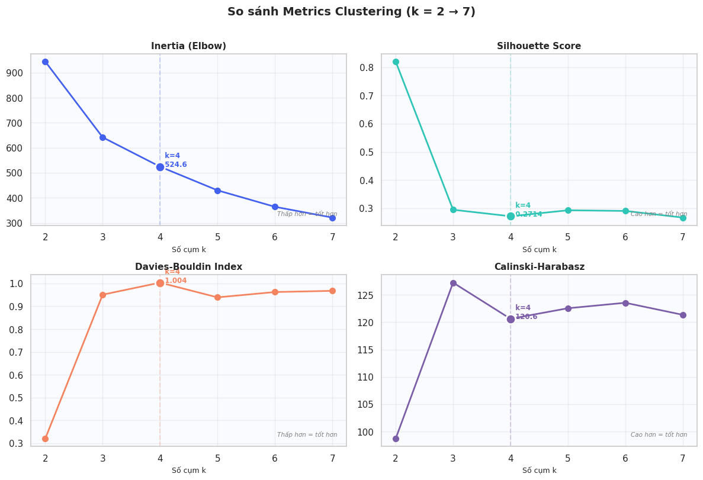
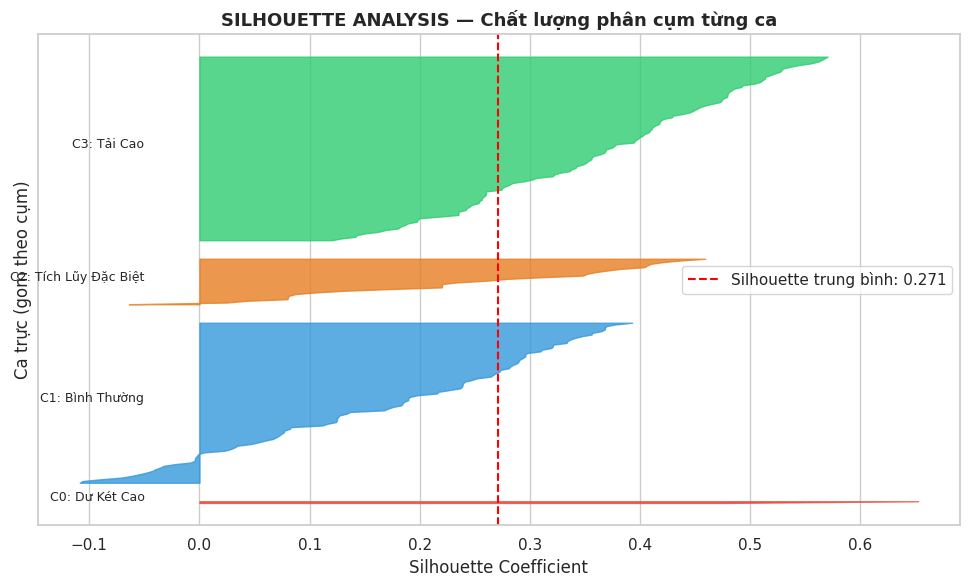
2. Kiểm chứng chéo: DBSCAN và Agglomerative Ward
Mục đích: K-Means giả định cụm có dạng gần hình cầu và nhạy cảm với khởi tạo ban đầu. Vì vậy, hai thuật toán phân cụm độc lập được sử dụng để kiểm chứng tính ổn định của cấu trúc dữ liệu.
- Chọn ε cho DBSCAN bằng k-Distance Graph: Biểu đồ khoảng cách đến láng giềng thứ 5, sắp xếp giảm dần. Đường cong gãy mạnh ở đầu rồi thoải dần — điểm khuỷu tay (Elbow) cho thấy ε = 3.116 là ngưỡng phân tách hợp lý. Hầu hết 230+ ca có hàng xóm trong khoảng 3.116; chỉ vài ca đầu tiên mới cần khoảng cách xa hơn để tìm láng giềng — đây chính là outlier.
- DBSCAN (ε=3.1, min_samples=5): Gán nhãn nhiễu (−1) cho đúng 2 điểm nằm tít ngoài không gian PCA (x ≈ 10 và x ≈ 15). Hai điểm này trùng khớp chính xác với cụm C0 của K-Means. Hai thuật toán hoàn toàn khác cơ chế đều đồng ý: 2 ca đó là bất thường thực sự.
- Agglomerative Ward (bottom-up, deterministic): Dendrogram cắt tại height = 14.25 tạo ra 4 nhánh — xác nhận dữ liệu tự nhiên hình thành 4 nhóm. ARI giữa Agglomerative và K-Means đạt 0.305: hai thuật toán không gán nhãn y hệt nhau nhưng đồng thuận về cấu trúc phân nhóm chính.
- Kết luận: Ba thuật toán với ba cơ chế khác nhau đều xác nhận sự tồn tại của các nhóm ca làm việc có hành vi phân biệt, đặc biệt là 2 ca outlier C0 bị tất cả cùng đẩy ra ngoài.
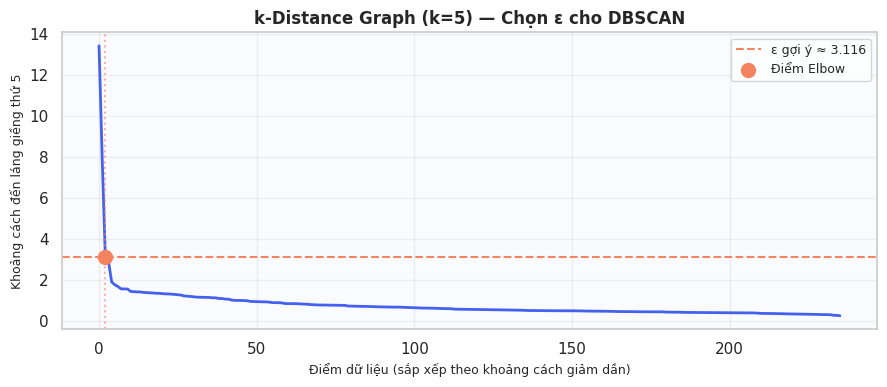
3 để tìm hàng xóm = outlier.')">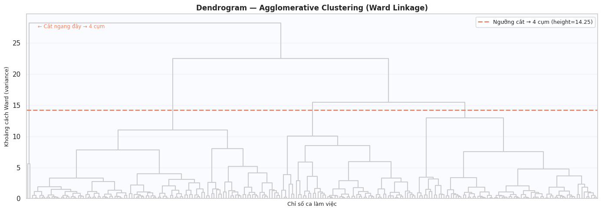
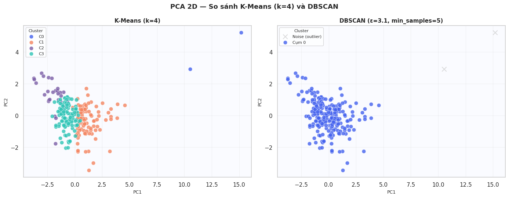
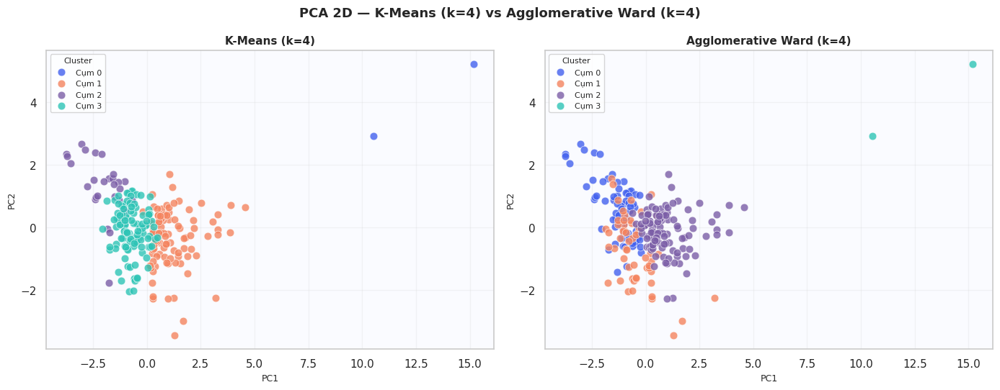
3. Đọc "ADN" của 4 Nhóm rủi ro (Hồ sơ Cụm)
Mục đích: Phân tích sự khác biệt của 4 nhóm dựa trên các đặc trưng đã chuẩn hóa và xây dựng hồ sơ hành vi nghiệp vụ cho từng cụm.
-
C0 — Dư Két Cao (2 ca, Outlier):
CashDiff_Ratio = 13.95 — cao gấp 15× trung bình, ô xanh đậm nhất trong toàn bộ heatmap.
Két dư gấp 13–22 lần doanh thu của chính ca đó. Số bill và doanh thu lại cực thấp (chuẩn hóa ~ −2).
Nghịch lý này xảy ra vì tiền tích lũy từ nhiều ca trước chưa được nộp, không phải tiền kiếm được trong ca này.
Ca Thời gian Ca làm Doanh thu Cash_Diff Tỷ lệ #071 25/01/2026 16:52 Ca Chiều 87.000 ₫ +1.330.000 ₫ ×15.3 #227 26/04/2026 15:37 Ca Chiều 90.000 ₫ +2.003.000 ₫ ×22.3 - C1 — Bình Thường (96 ca): Tất cả chỉ số gần 0 trong không gian chuẩn hóa. Đây là "baseline" của hệ thống — cách vận hành điển hình, không có gì bất thường.
- C2 — Tích Lũy Đặc Biệt (28 ca): Số bill (1.56) và doanh thu (2.11) ở mức cao nhất trong 4 cụm — đây là các ca siêu đông khách. Cash_Diff không đặc biệt cao (−0.32 âm nhẹ). Tên "Tích Lũy Đặc Biệt" phản ánh đặc điểm bận rộn vận hành bất thường, không phải tích lũy tiền.
- C3 — Tải Cao (110 ca, đông nhất): Bill và doanh thu ở mức vừa phải cao, nhỏ hơn C2. Cash_Diff thấp (−0.46). Áp lực giao dịch cao khiến nhân viên dễ mắc sai sót thối tiền — đây là cụm cần giám sát do tần suất cao, dù từng ca không bất thường cực đoan.
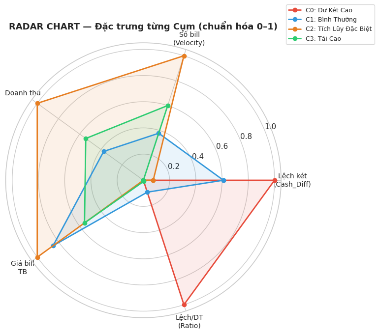
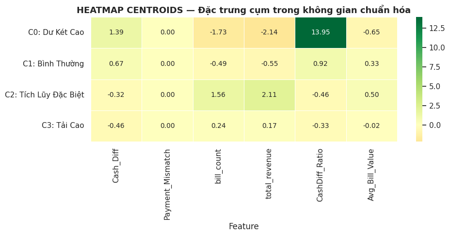
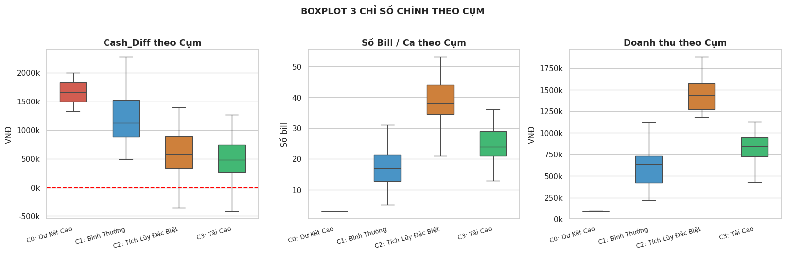
4. Không gian đa chiều (PCA) & Xu hướng theo Ca
Mục đích: PCA được sử dụng để giảm dữ liệu từ 5 chiều xuống 2D nhằm trực quan hóa xu hướng phân cụm. Phân bố theo ca sáng/chiều và theo thời gian giúp kiểm chứng tính ổn định của các nhóm rủi ro.
- PCA 2D (76.6% variance được giữ lại): PC1 (57.6%) phản ánh chủ yếu quy mô giao dịch, PC2 (19%) liên quan đến lệch tiền. Hai điểm C0 nằm tít ngoài tại PC1 ≈ 13–15 — xa đến mức không thể nhầm. Centroid của C1 và C3 nằm gần nhau → lý do ranh giới hai cụm này không sắc nét theo Davies-Bouldin.
- C0 — 100% Ca Chiều: Không có một ca C0 nào thuộc Ca Sáng. Ca Sáng chưa nộp tiền, Ca Chiều nhận cả két cũ lẫn mới → dư tiền cực đoan xuất hiện ở Ca Chiều.
- C3 — 65% Ca Sáng: Ca Sáng đông khách hơn (doanh thu cao hơn như đã thấy ở Vòng 1), áp lực giao dịch cao, dễ thối nhầm tiền → xuất hiện nhiều ở C3.
- Không có tính mùa vụ: Scatter theo thời gian và stacked bar theo tháng đều cho thấy tỷ lệ các cụm ổn định qua 5 tháng. Rủi ro không tập trung vào giai đoạn nào — đây là đặc điểm hệ thống, không phải biến động thời vụ.
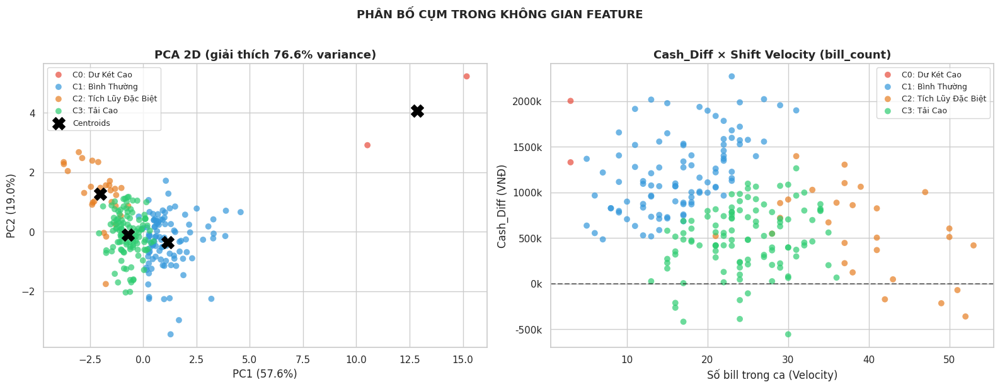
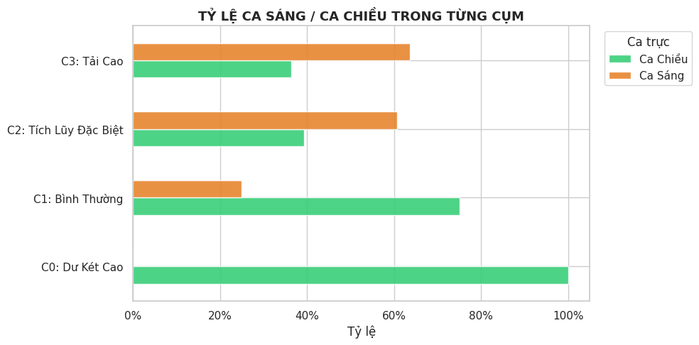
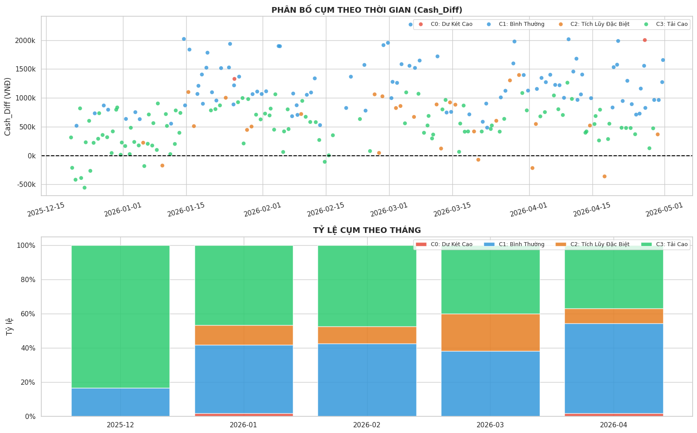
💡 KẾT LUẬN VÒNG 2 & ĐẦU RA SẢN PHẨM
Tạo CashDiff_Ratio và Avg_Bill_Value giúp thuật toán đánh giá tỷ trọng sai lệch thay vì bị chi phối bởi giá trị tuyệt đối. Đặc biệt, CashDiff_Ratio là feature quyết định nhận diện C0 (giá trị 13.95 so với trung bình ~0.5–1).
K-Means (k=4) làm mô hình chính. DBSCAN xác nhận chính xác 2 outlier C0. Agglomerative Ward (ARI=0.305) xác nhận cấu trúc 4 nhánh tự nhiên. Không có metric nào đứng một mình "chứng minh" k=4 — quyết định dựa trên Elbow rõ và ý nghĩa nghiệp vụ.
C0 (dư két) = 100% Ca Chiều do Ca Sáng chưa nộp tiền. C3 (tải cao) = 65% Ca Sáng do đông khách hơn. C2 (siêu bận) là các ca có doanh thu lớn nhất, không phải ca dư tiền nhiều nhất.
Clustered_Shifts.csv — 236 ca làm việc được gán nhãn C0–C3, làm đầu vào cho Rule Engine và các bước phân tích rủi ro tiếp theo.
Khai phá Hành vi Khách hàng (Customer Pattern Mining)
Vòng 3 "đọc" cột Ghi chú (notes) do nhân viên gõ tay. Hệ thống tự động làm sạch lỗi chính tả, nhận diện khách quen, và dùng IQR để "bắt quả tang" những lần mua hàng bất thường về giá trị hoặc phương thức thanh toán. Input: DetailsTransaction.csv
1. Làm sạch Ghi chú & Vẽ "Chân dung" Khách quen
Vấn đề: Nhân viên gõ tên khách kiểu chat ("Ngọc pt", "n9oc pt", "c hải"...). LLM như PhoBERT không đọc được viết tắt này; 101 samples quá ít để fine-tune bất kỳ mô hình ngôn ngữ nào.
- Giải pháp — Fuzzy Grouping: Bỏ dấu tiếng Việt, lowercase, strip whitespace, gom mọi biến thể về một Mã khách hàng.
- Sau gom nhóm, biểu đồ cột vẽ thói quen thanh toán Top 3 khách mua nhiều nhất.
- Phát hiện: "C Trang" và "Ngọc PT" gần 100% chuyển khoản. "Chú Hải" thích tiền mặt. Đây là baseline để phát hiện bất thường.
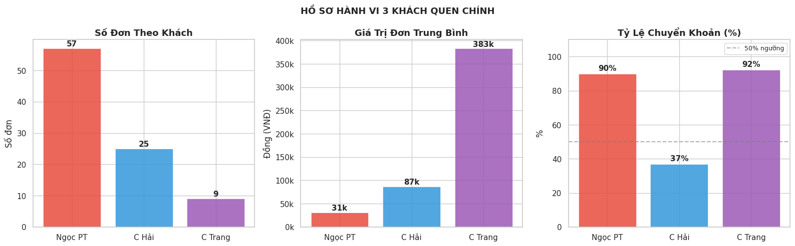
2. Bắt quả tang Giao dịch "Lạ" (Anomaly Detection)
Mục đích: So sánh từng đơn hàng với profile thói quen của khách đó. IQR phát hiện bất thường về giá trị; so sánh phương thức thanh toán phát hiện bất thường hành vi.
- Value Anomaly (IQR): Hộp của "Ngọc PT" bẹp ở mức 50.000đ. Các chấm đỏ văng lên 200.000–300.000đ → điểm dị biệt rõ ràng.
- Payment Anomaly: "Ngọc PT" vốn 90% chuyển khoản — xuất hiện 1 giao dịch tiền mặt trên timeline → nghi vấn nhân viên tự lấy tiền mặt bỏ túi.
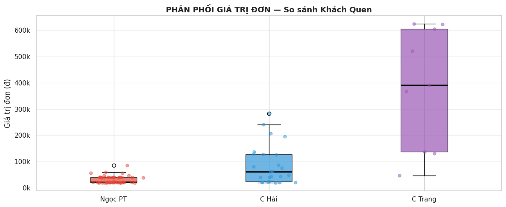
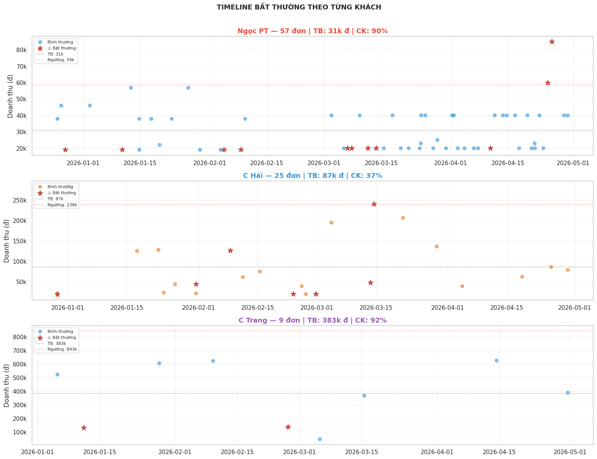
💡 KẾT LUẬN VÒNG 3 & ĐẦU RA SẢN PHẨM
Chuyển text thô → customer_label, norm_note, pct_transfer và các chỉ số hành vi định lượng.
IQR per-customer giám sát từng khách độc lập, phát hiện ngay hóa đơn có dấu hiệu bị thao túng phương thức thanh toán.
Chủ cửa hàng biết đích danh khách A mang bao nhiêu tiền, trả kiểu gì, và hóa đơn nào đang có nguy cơ thất thoát.
Customer_Pattern.csv — 101 hóa đơn đã chuẩn hóa, dán nhãn khách, gắn cờ cảnh báo bất thường.
Hành động Đề xuất (Prescriptive — Rule Engine)
Tích hợp toàn bộ kết quả từ 3 vòng trước để xây dựng Hệ chuyên gia (Expert System) tự động. 3 quy tắc logic kiểm toán phân loại nguyên nhân sai lệch, đánh giá mức độ nghiêm trọng và sinh báo cáo cảnh báo bằng tiếng Việt — không dùng LLM. Input: Audit_Merged_Data.csv, Clustered_Shifts.csv, Customer_Pattern.csv. Output: POS_Master.csv (Master Data khép kín toàn bộ Pipeline).
1. Cơ chế hoạt động của Rule Engine
Bối cảnh: Khi có lỗi xảy ra, thay vì để AI tự đoán (dễ sai, khó giải thích), nhóm lập trình 3 quy tắc cứng dựa trên nghiệp vụ kế toán thực tế.
- R1 — Nhầm loại tiền:
Cash_Diff < 0VÀPayment_Mismatch > 0. Nhân viên bấm nhầm nút. Tiền không mất, chỉ sai sổ sách. - R2 — Thất thoát thu ngân:
Cash_Diff < 0nhưng hóa đơn khớp hoàn hảo. ⚠ Cảnh báo đỏ — có thể thối nhầm hoặc tự ý rút tiền. - R3 — Dư két bất thường: Tiền thực tế nhiều hơn sổ sách. Thường do ca trước lười chốt, dồn tiền giao thẳng sang ca sau.
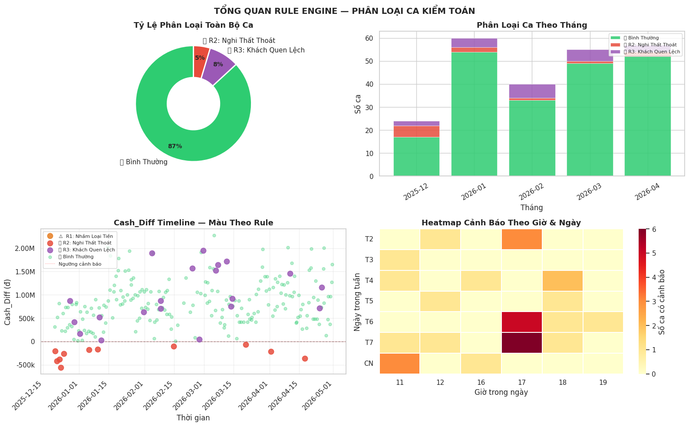
2. Phân loại Mức độ Nghiêm trọng & Báo cáo Tự động
Mục đích: Không phải lỗi nào cũng cần giám đốc ra mặt. Hệ thống phân tầng để người quản lý biết ưu tiên xử lý.
- CAO (Đỏ): R2 + bất thường thanh toán từ Vòng 3 → khả năng gian lận cực cao (cross-phase signal).
- TRUNG BÌNH (Cam): R2 + cụm C3 (tải cao) → đề xuất bổ sung nhân sự, không phạt nhân viên.
- CHÚ Ý (Xanh): R3 (dư két) → nhắc nhở quy trình bàn giao.
- Tính năng nổi bật: Report Generator tự động viết câu tiếng Việt như trợ lý kế toán — hoàn toàn bằng f-string, không LLM.
Thời gian: 4/18/2026 12:05:56 (Ca Sáng)
Luật vi phạm: R2_That_Thoat_Thu_Ngan
---------------------------------
Mức độ rủi ro: TRUNG BÌNH
Lý do: Lệch két âm (-287k), Đối soát hóa đơn khớp. Cụm C3 (Tải cao).
Khuyến nghị: Rà soát camera. Cân nhắc bổ sung nhân sự giờ cao điểm.
3. Khép kín vòng đời CRISP-DM (Export Master Data)
Mục đích: Chuẩn bị Data Warehouse vững chắc cho các vòng lặp khai phá dữ liệu tiếp theo, tránh việc phải xử lý lại luồng dữ liệu từ đầu.
- Cấu trúc dữ liệu "Sạch tuyệt đối": Ép kiểu toàn bộ số liệu tài chính về số nguyên (int64), triệt tiêu hoàn toàn số thực (0 float) để ngăn chặn rác dữ liệu ở các hàm tính toán sau này.
- Categorical Engineering: Các chỉ số tỷ lệ phức tạp (như tỷ lệ lệch két, tốc độ ca) được tự động phân nhóm (binning) thành 7 cột trạng thái phân loại dễ hiểu (VD: "Ca siêu bận", "Dư két bất thường").
- Tính kế thừa: Master data đóng vai trò là "Single Source of Truth", chứa toàn bộ kết quả phân cụm K-Means, thói quen khách hàng và nhãn rủi ro Rule Engine, sẵn sàng feed trực tiếp vào các mô hình Machine Learning bậc cao hơn.
- Shape: 236 rows × 36 columns
- Missing values: 0
- Float types: 0 (Strict INT/CAT enforced)
CRISP-DM Cycle: COMPLETE.
Dataset ready for next iteration.
💡 TỔNG KẾT DỰ ÁN & ĐẦU RA SẢN PHẨM CUỐI CÙNG
Chuyển bài toán "lệch tiền liên tục" thành quy trình giám sát tự động. Giám đốc không cần dò từng hóa đơn nữa.
ML (K-Means) khám phá pattern ẩn → Rule Engine thực thi quyết định minh bạch. Hai tầng bổ sung nhau hoàn hảo.
Đủ nhẹ để tích hợp API ngược lại vào POS Apps Script gốc. Không phụ thuộc dịch vụ cloud hay LLM.
POS_Master.csv — Bảng Master hoàn chỉnh hợp nhất toàn bộ pipeline 4 vòng. Chứa 36 cột đã chuẩn hóa chuyên sâu (categorical/int), đóng vai trò là nền tảng Data Warehouse cho vòng đời CRISP-DM kế tiếp.
Báo cáo Kiểm toán (Automated Report)
Bảng trích xuất dữ liệu thực tế từ Rule Engine chạy trên 236 ca. Log toán học được tự động dịch sang ngôn ngữ nghiệp vụ kiểm toán để người quản lý lập tức ra quyết định.
| ID | Thời gian | Quy mô Ca | Trạng thái | Chi tiết Báo cáo Tự động |
|---|---|---|---|---|
| #001 | 20/12/2025 17:54 (Ca Chiều) |
462,000 ₫ C3: Tải Cao |
🟠 TRUNG BÌNH |
🔍 Cơ sở cảnh báo (Nghi thất thoát)
⚡ Hành động đề xuất
|
| #015 | 27/12/2025 17:52 (Ca Chiều) |
596,000 ₫ C1: Bình Thường |
🔵 CHÚ Ý |
🔍 Cơ sở cảnh báo (Lệch hành vi)
⚡ Hành động đề xuất
|
| #024 | 01/01/2026 12:02 (Ca Sáng) |
794,000 ₫ C3: Tải Cao |
🔵 CHÚ Ý |
🔍 Cơ sở cảnh báo (Dị biệt kép)
⚡ Hành động đề xuất
|
| #040 | 09/01/2026 17:37 (Ca Sáng) |
1,468,000 ₫ C2: Tích Lũy Đặc Biệt |
🟠 TRUNG BÌNH |
🔍 Cơ sở cảnh báo (Nghi thất thoát rủi ro cao)
⚡ Hành động đề xuất
|
| #223 | 24/04/2026 17:20 (Ca Chiều) |
631,000 ₫ C1: Bình Thường |
🔵 CHÚ Ý |
🔍 Cơ sở cảnh báo (Giá trị bất thường)
⚡ Hành động đề xuất
|